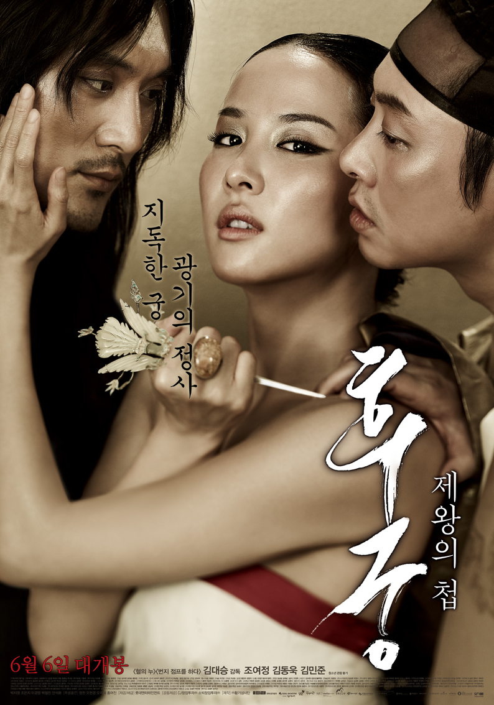

The Concubine
Kim Dae-seung
Set during the early Joseon Dynasty, the film begins with a concubine of the previous king (Park Ji-young) in a precarious position of having no blood ties to her step son, the current childless, widow king (Jung Chan). She schemes to replace him on the throne with her submissive young son Sung-won (Kim Dong-wook). Indifferent to his mother’s plans, the timid prince falls in love at first sight with Hwa-yeon (Jo Yeo-jeong), an aristocrat’s daughter, who has already found love with Kwon-yoo (Kim Min-joon), a low-born commoner. When her father (Ahn Suk-hwan) must send her to the royal palace as a concubine for the king, the two lovers try to elope but are caught after their first night together. Hwa-yeon agrees to enter the palace in exchange for saving Kwon-yoo's life.
The Korean version